S15 · Level 5 — Governance dan capstone
Capstone: klaim multi-mata-uang
Pecah pekerjaan dengan Copilot menjadi desain, implementasi, tes, dan dokumentasi. Sepakati kurs dan pembulatan, lalu rencanakan draft, CI, dan review. Fitur multi-mata-uang masih target latihan; keputusan lanjut tetap di tangan manusia.
Status latihan: Tiket induk dan empat pekerjaan sudah ada. Kriteria tes ADR direvisi; fitur multi-mata-uang masih usulan.. Lihat diagram interaksi · Ikuti langkah · Cek hasil · Langkah live · Ulangi dari awal.
Masalah yang dihadapi
Form awal hanya menerima rupiah. Lina ingin karyawan bisa mengajukan biaya perjalanan USD dan SGD. Dengan kurs fiktif Rp15.000 per USD, klaim USD 100 menjadi Rp1.500.000. Karena melewati batas, klaim itu harus lewat Manager lalu Finance.
Kerugian: Jika kurs dan pembulatan tidak disepakati, angka yang ditampilkan bisa berbeda dari angka yang dipakai untuk menentukan persetujuan.
Masalah pada baseline
issues/S15.md
Lihat potongan atau catatan sumber
ADR memutuskan kurs, waktu kurs, pembulatan dan limit persetujuan dalam IDR.Solusi dan alur
Pecah pekerjaan dengan Copilot menjadi desain, implementasi, tes, dan dokumentasi. Sepakati kurs dan pembulatan, lalu rencanakan draft, CI, dan review. Fitur multi-mata-uang masih target latihan; keputusan lanjut tetap di tangan manusia.
Alur kerja ringkas
LinaPecah pekerjaan USD dan SGD
Hasil: Tiket induk dan empat pekerjaan sudah ditautkan: desain, API/form, tes, dan dokumentasi.
ArchitectUsulkan kurs dan pembulatan
Hasil: Contoh fiktif USD 100 × Rp15.000 menjadi Rp1.500.000, sehingga perlu Manager lalu Finance. Tes pembulatan dibuat terpisah.
Tech LeadTinjau sebelum implementasi
Hasil: Desain masih usulan. Aplikasi yang sudah diuji hanya mengajukan klaim rupiah; fitur USD/SGD belum dibuat.
Diagram interaksi
Dari gagasan klaim USD/SGD sampai keputusan desain.
Yang sudah disiapkan: tiket dan desain
-
LinaTiket induk GitHub kePlannerGitHub Agents
-
PlannerGitHub Agents keLinaTiket induk GitHub
-
LinaTiket induk GitHub keArchitectDraft catatan desain
-
ArchitectDraft catatan desain keBimaReview GitHub
-
BimaReview GitHub keArchitectDraft catatan desain
Jalur target: belum ada implementasi
-
BimaReview GitHub keImplementerDraft kode nanti
-
ImplementerDraft kode nanti keBimaReview GitHub
Lihat diagram lengkap
- Lina menulis epik bersama Planner.
- Architect menulis ADR; Bima menyetujui.
- Copilot mengajukan draft PR.
- CI memperlihatkan tes.
- Review Board dan CodeQL memberi bukti.
- Bima memutuskan merge.
- Docs Sync dan Triage menangani tindak lanjut.
- Yoga memeriksa metadata audit sepanjang alur.
Lihat sumber Mermaid

flowchart TB
a["1 · Lina + Planner"] -->|Tulis epik dan task| b["2 · Architect + Bima"]
b -->|Setujui ADR| c["3 · Copilot"]
c -->|Ajukan draft PR| d["4 · CI"]
d -->|Sajikan tes| e["5 · Reviewer + CodeQL"]
e -->|Rekomendasikan keputusan| f["6 · Bima"]
f -->|Merge di repo turunan| g["7 · Docs Sync + Triage"]
g -->|Buktikan jejak kerja| h["8 · Audit sepanjang alur"]
classDef human fill:#e5eeff,stroke:#315699,color:#132d5b
classDef ai fill:#efe6ff,stroke:#7354a4,color:#382459
classDef gate fill:#fff2dc,stroke:#955b17,color:#5b3711
class a,b,f human
class c,g ai
class d,e,h gateLangkah demo
Yang kamu lakukan
- Di GitHub repo latihan, pilih Issues → New issue untuk tiket induk klaim USD/SGD. Di Agents pilih Planner bila tersedia, dan pecah pekerjaan menjadi desain, API/form, tes, dan dokumentasi.
- Minta Architect menulis catatan desain tentang kurs, pembulatan, dan persetujuan. Di draft desain, buka Files changed dan beri review manusia. Jangan meminta implementasi sebelum desain diterima.
- Jika ada implementasi nantinya, cek form, hasil konversi, persetujuan, tes, dan review pada PR yang sama. Latihan saat ini masih di usulan desain; tidak ada fitur atau merge yang perlu disetujui sekarang.
Issue adalah tiket kerja. PR (pull request) adalah usulan perubahan; jika masih draft, hasilnya belum digabung. Files changed atau Changes menunjukkan file yang berubah. Checks menunjukkan hasil tes otomatis.
Ikuti alur GitHub dari tiket sampai review jika latihanmu memakai PR. Tautan contoh di bawah hanya membuka hasil yang sudah ada.
Contoh dan cara cek hasilnya
Coba jalur IDR yang sudah berfungsi
Di http://127.0.0.1:3000, ajukan klaim latihan Rp1.250.000 bertanggal hari ini. Di halaman Persetujuan, setujui sebagai Manager Operasional lalu Finance. Cek status Disetujui. Ini contoh rupiah, belum ada pilihan USD atau SGD.
npm run demo:before Perbesar S15-before-annotated.png
Perbesar S15-before-annotated.pngv0-baseline · dianotasi · Nomor 1 menunjuk field Jumlah (IDR). Kenali gerbang yang tidak boleh dilewati
Aturan perlindungan branch menetapkan bahwa review manusia dan pemeriksaan otomatis harus lulus di PR yang benar. Tautan pengaturan butuh akses maintainer; jangan mengubah pengaturan atau merge saat membaca.
Lihat lokasi aturan perlindungan branch workshop
 Perbesar S15-branch-protection-annotated.png
Perbesar S15-branch-protection-annotated.pngSumber GitHub · 1. Settings → Branches → demo/workshop → menu aturan → Edit untuk melihat. Require approvals aktif. · 2. Jumlah approval yang diperlukan adalah 1. · 3. Require status checks to pass before merging juga aktif. · 4. Cocokkan Jakarta, Los Angeles, dan e2e. Ini contoh guardrail, bukan review atau merge capstone; tidak ada pengaturan disimpan. Pecah tiket besar sebelum menulis kode
Mulai dari kebutuhan klaim USD dan SGD. Pecah menjadi desain, API/form, tes, dan dokumentasi. Dalam catatan desain, sepakati sumber kurs, waktu kurs diambil, pembulatan, dan nilai rupiah yang dipakai untuk persetujuan.
Tentukan cara menilai usulan kode nantinya
Belum ada PR implementasi multi-mata-uang yang bisa diuji. Setelah desain disetujui dan PR benar-benar ada, cek Files changed, tes alur approval, dan hasil review. Tes aplikasi rupiah tidak membuktikan fitur USD/SGD sudah jadi.
Berhenti di keputusan desain, bukan merge
Saat ini desain masih Proposed (usulan). Sinkronisasi dokumen dan audit setelah implementasi adalah tahap yang direncanakan. Foto yang ada menunjukkan alur persetujuan rupiah, bukan fitur multi-mata-uang.
 Perbesar S15-local-approval.png
Perbesar S15-local-approval.pngv0-baseline · Setelah alur baseline IDR, klaim pelatihan terlihat Disetujui. Bukan hasil fitur multi-currency. Buka epik yang sudah dibuat
Tiket induk ada di repo expense-app-full yang terpisah. CI yang lulus pada versi awal repo latihan itu tidak menguji fitur USD atau SGD.
Lihat tiket induk multi-mata-uang di repo latihan
 Perbesar S15-01-epic-annotated.png
Perbesar S15-01-epic-annotated.pngSumber GitHub · 1. Pastikan repo turunan dan judul epik. · 2. Baca contoh kurs fiktif, acceptance criteria, dan gate review sebelum implementasi. Foto historis sebelum contoh epik diselaraskan; lihat tangkapan backlog terbaru. Periksa pemecahan tahap dalam ADR
Baca urutan pekerjaan dalam usulan Architect. Cocokkan dengan Sub-issues pada tiket induk. Empat pekerjaan sudah ditautkan; itu bukan bukti Planner menerbitkannya secara otomatis.
Lihat pembagian pekerjaan di draft desain · Lihat Sub-issues yang sudah ditautkan
 Perbesar S15-draft-plan-annotated.png
Perbesar S15-draft-plan-annotated.pngSumber GitHub · 1. Baca rencana ADR → API/UI → tes → docs. Ini rencana Architect yang ditulis di ADR, bukan hasil Planner yang sudah ditetapkan sebagai sub-issue. Cari usulan sebelum memberi keputusan
Di ADR, cari kurs dan waktu pengambilan kurs, aturan pembulatan, ambang persetujuan, dan audit. Proposed artinya desain masih menunggu persetujuan untuk implementasi.
Baca ADR 0002 yang masih berupa usulan
 Perbesar S15-adr-proposed-annotated.png
Perbesar S15-adr-proposed-annotated.pngSumber GitHub · 1. Buka ADR 0002 pada Files changed. · 2. Status Proposed belum memberi izin implementasi. Kurs uji fiktif; jangan memakai sebagai data keuangan. Periksa empat draf pekerjaan Planner
Gambar memperlihatkan rencana awal. Di tiket terbaru, contoh sudah disamakan: USD 100 × Rp15.000 = Rp1.500.000. Gunakan untuk membahas persetujuan Manager lalu Finance, bukan sebagai kurs produksi.
Baca rencana awal untuk dibandingkan · Lihat kurs contoh pada tiket induk
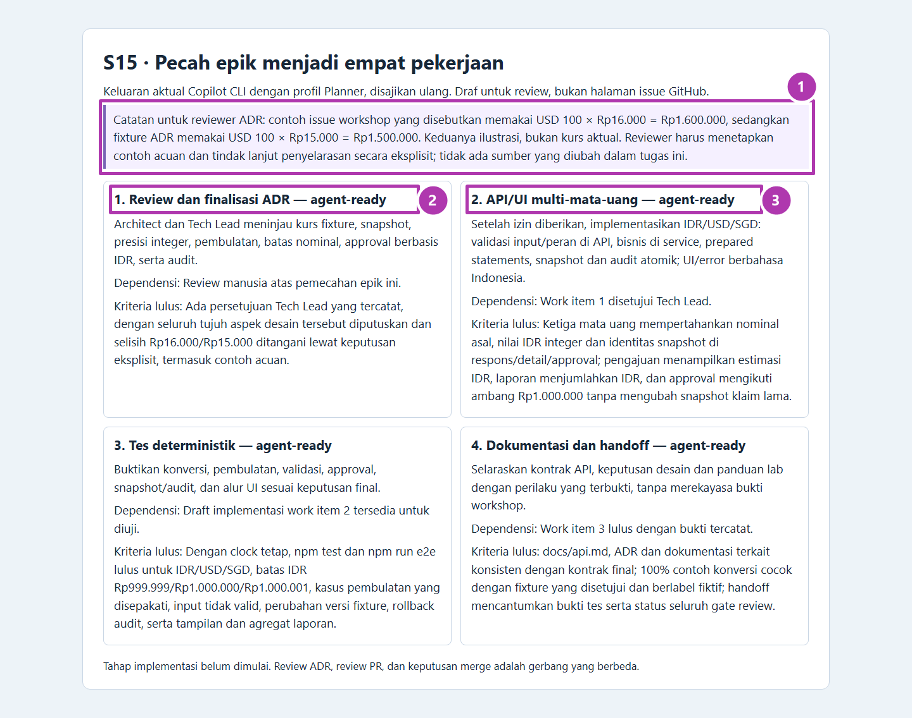
Perbesar S15-02-breakdown-annotated.pngKeluaran Copilot CLI · profil Planner · ADR 0002 Proposed · 1. Cocokkan contoh USD 100: issue Rp1.600.000, usulan ADR Rp1.500.000. Keduanya fiktif; reviewer memilih satu acuan. · 2. Putuskan ADR dan kriterianya. · 3. API/UI menunggu keputusan; tes dan docs mengikuti. Ini draf Planner, bukan sub-issue yang sudah didelegasikan. Foto historis sebelum contoh epik diselaraskan; lihat tangkapan backlog terbaru. Buka empat Sub-issues yang sudah ditautkan
Di bagian Sub-issues, cari empat pekerjaan: review desain, API/UI, tes, dan docs. Itu bukti pekerjaan sudah dibagi, bukan fitur sudah diimplementasikan.
Buka daftar empat Sub-issues di tiket induk
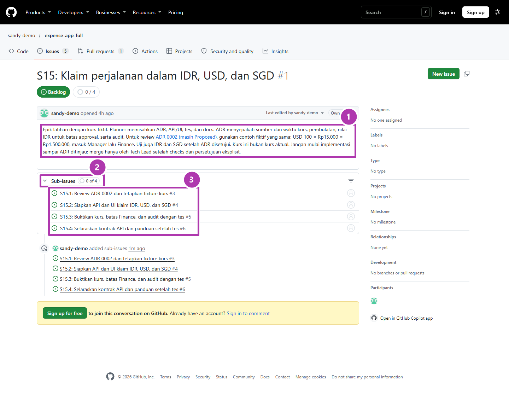
Perbesar S15-epic-backlog-annotated.pngSumber GitHub · 1. Cocokkan contoh fiktif USD 100 × Rp15.000 = Rp1.500.000 dengan ADR yang masih Proposed. · 2. Sub-issues 0 of 4 adalah pekerjaan terbuka, bukan sudah lulus. · 3. Mulai dari review ADR. API/UI, tes, dan docs menunggu tahap sebelumnya. Bandingkan audit aplikasi dan audit tool
Jalankan contoh baseline Rp1.250.000. Di claim_events, tiga perubahan status memakai jam uji tetap. Di latihan hook yang terpisah, tiga panggilan lokal mencatat waktu, fase, keputusan, kategori. Tidak ada argumen tool atau isi klaim di audit hook. Foto ini bukan hasil merge.
npm test -- api.test.js -t 'mengalihkan klaim besar ke Finance'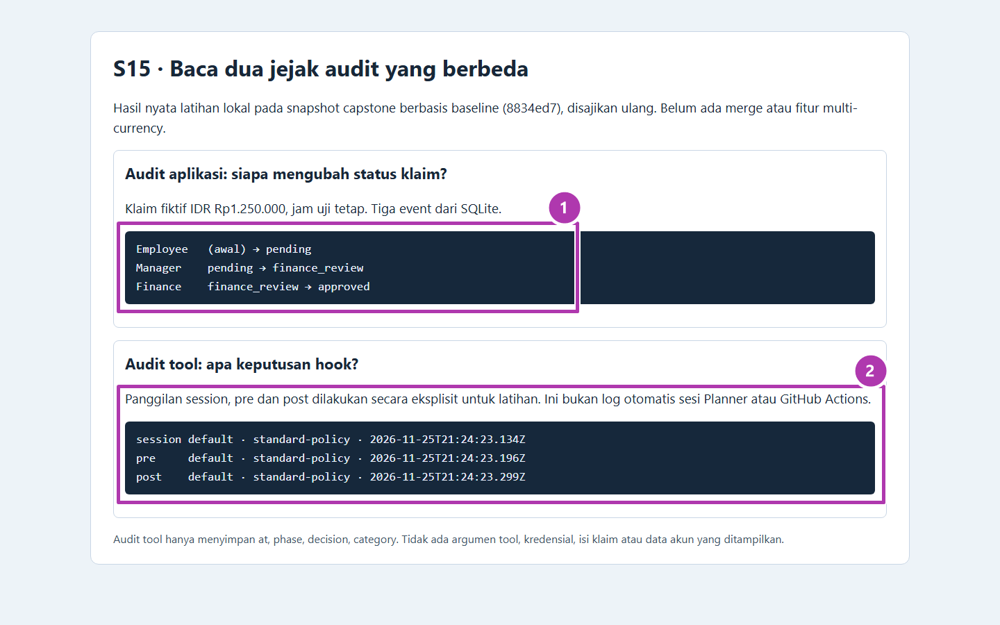
Perbesar S15-09-audit-annotated.pngKeluaran latihan lokal pada snapshot capstone berbasis baseline 8834ed7; ditampilkan ulang · 1. Cocokkan audit aplikasi: Employee membuat pending, Manager mengalihkan ke Finance, Finance menyetujui. · 2. Baca audit tool: session, pre dan post menghasilkan default/standard-policy. Panggilan hook sengaja dijalankan untuk latihan; ini bukan log otomatis Planner atau bukti setelah merge. Tinjau apakah fixture bisa menguji pembulatan
Pada kurs fiktif contoh, satu sen menjadi rupiah bulat, jadi kasus setengah rupiah belum teruji. Review menyarankan tes pembulatan tersendiri selain tes ambang Finance.
Baca alasan reviewer meminta tes pembulatan terpisah
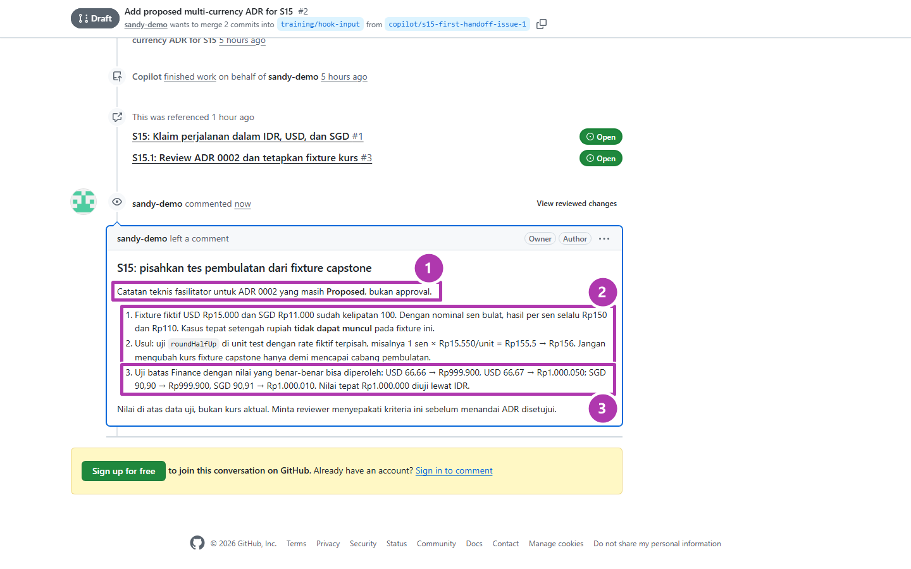
Perbesar S15-adr-review-rounding-annotated.pngSumber GitHub · 1. Ini komentar teknis, bukan approval. · 2. USD/SGD pada fixture awal menghasilkan rupiah utuh per sen; kasus setengah memakai rate sintetis khusus tes unit. · 3. Pilih nilai nyata dari fixture di dua sisi batas, dan uji nilai tepat Rp1.000.000 memakai IDR. Periksa revisi kriteria ADR sebelum memberi keputusan
Di versi dokumen ini, tes pembulatan dan tes alur persetujuan sudah dipisah. Kurs fiktif tetap sama dan desain masih Proposed. Perubahan kriteria tidak berarti implementasi sudah dimulai.
Baca bagian kriteria tes yang direvisi
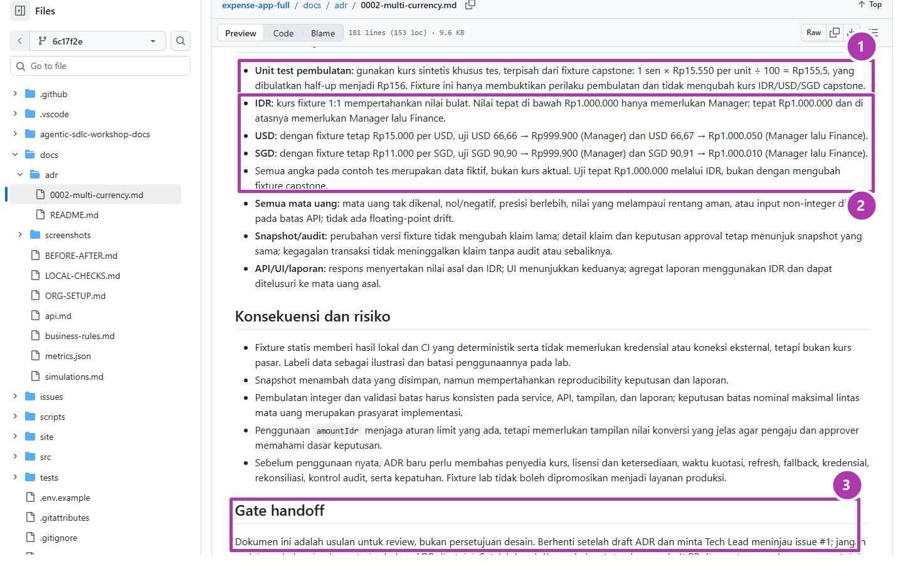
Perbesar S15-adr-rounding-revised-annotated.pngSumber GitHub · 1. Tes unit khusus memakai angka fiktif Rp15.550: satu sen memberi Rp155,5 dan dibulatkan menjadi Rp156. · 2. Fixture capstone tetap sama untuk USD dan SGD; nilai tepat Rp1.000.000 diuji lewat IDR. · 3. Gate handoff tetap meminta persetujuan reviewer; perubahan teks bukan approval.


Cek hasil
Coba baseline Rp1.250.000: pending → finance_review → approved. Periksa empat Sub-issues pada epik dan revisi ADR 6c17f2e: tes pembulatan terpisah dari fixture alur persetujuan. Contoh kurs fiktif tidak berubah dan fitur multi-currency belum dibuat. Review manusia masih mendahului implementasi.
Bukti latihan terverifikasi
Langkah live
Prasyarat dan petunjuk pengambilan bukti
Reviewer manusia meninjau ADR 0002 di draft sandy-demo/expense-app-full#2. Contoh fiktif dalam epik sudah sama dengan proposal; keputusan pembulatan dan batas tetap perlu ditinjau. Mulai implementasi setelah persetujuan desain; izin merge terpisah.
S15-03-adr.pngBuka draft ADR 0002. Tunjukkan keputusan sumber kurs, waktu kurs, pembulatan, limit dan audit, beserta persetujuan reviewer yang berwenang sebelum implementasi.
S15-04-pr.pngBuka draft implementasi dan lihat issue/ADR yang ditautkan. Di Files changed periksa fakta IDR/USD/SGD serta test cases, bukan jumlah file saja.
S15-05-ci.pngDi Checks buka CI pada commit PR yang sama. Foto hasil tes yang mengecek kurs, pembulatan dan limit, plus e2e; status hijau lama tidak cukup.
S15-06-reviews.pngDi Conversation dan Checks verifikasi saran review, keputusan reviewer manusia, hasil CodeQL dan resolusi komentar. Review Copilot bukan persetujuan manusia.
S15-07-merge.pngHanya Tech Lead di repo turunan dengan izin merge terpisah. Rekam hulu yang mendapat persetujuan, checks lulus dan status Merged yang benar-benar terjadi; jangan memicu merge untuk sekadar menghasilkan foto.
S15-08-docs.pngSesudah perubahan diterima, buka run dan draft Docs Sync yang benar. Periksa bahwa output hanya docs yang diizinkan dan menjelaskan aturan mata uang.
S15-after.pngJalankan ref versi multi-currency yang sudah disetujui di repo turunan. Foto dropdown IDR/USD/SGD serta hasil contoh yang cocok dengan ADR. UI IDR baseline atau grafik ilustrasi bukan hasil after.
Sebelum dan sesudah

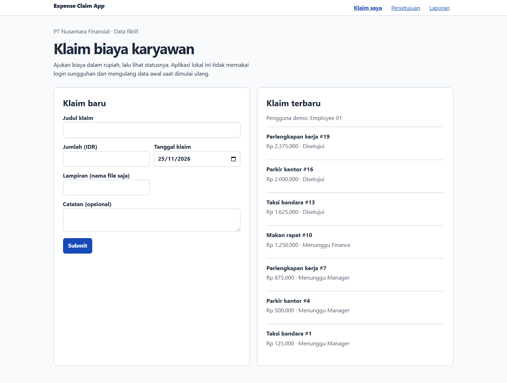
Perbesar S15-before.pngS15-after.png| Bagian | Sebelum | Sesudah / target |
|---|---|---|
| Perilaku | Form hanya IDR; Rp1.250.000 melewati pending → finance_review → approved. | Target IDR/USD/SGD dengan nilai dasar IDR; belum ada hasil multi-currency atau merge. |
| Bukti visual | Ada tangkapan lokal. | Belum direkam. |
| Keputusan | Peserta membaca keadaan awal. | Manusia memeriksa hasil sebelum meneruskan. |
Manfaat
- Setiap tahap punya penanggung jawab dan hasil yang bisa ditinjau.
Bukti dan sumber
Template issue S15 · Data latihan dan pengukuran.
 Perbesar S15-local-result.png
Perbesar S15-local-result.png Perbesar S15-02-breakdown.png
Perbesar S15-02-breakdown.png Perbesar S15-09-audit.png
Perbesar S15-09-audit.pngBukti GitHub live
Epik, audit lokal, dan empat Sub-issues terverifikasi. Komentar rounding menghasilkan revisi pada satu dokumen ADR, bukan persetujuan atau implementasi. Fixture utama tidak diubah.
- sandy-demo/expense-app-full/issues/1
- sandy-demo/expense-app-full/pull/2
- sandy-demo/expense-app-full/actions/runs/45655771427
Perbesar S15-branch-protection-annotated.png Perbesar S15-01-epic.pngPerbesar S15-01-epic-annotated.png
Perbesar S15-01-epic.pngPerbesar S15-01-epic-annotated.png
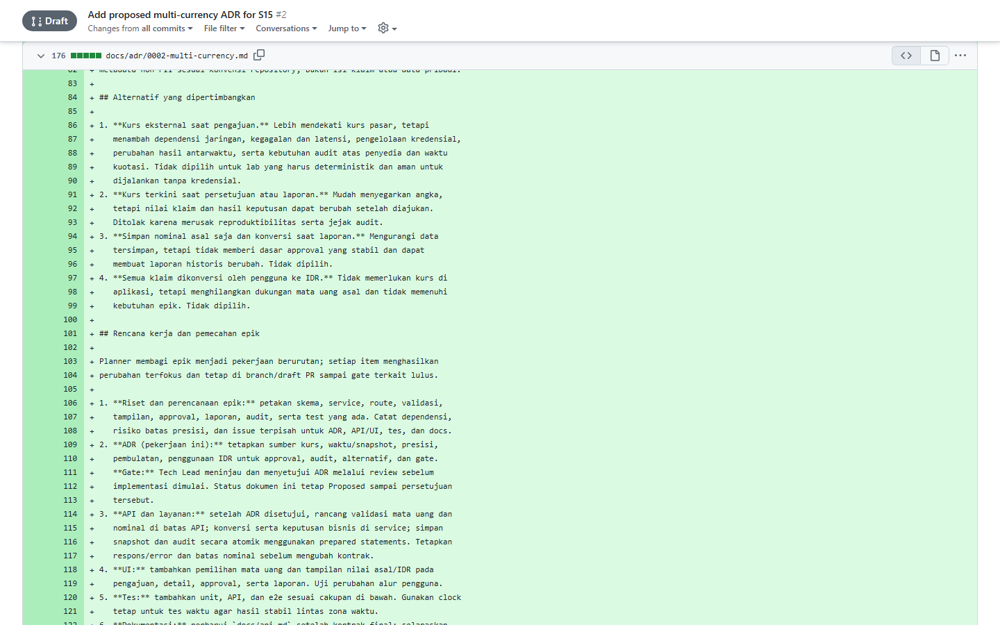
Perbesar S15-draft-plan.pngPerbesar S15-draft-plan-annotated.png
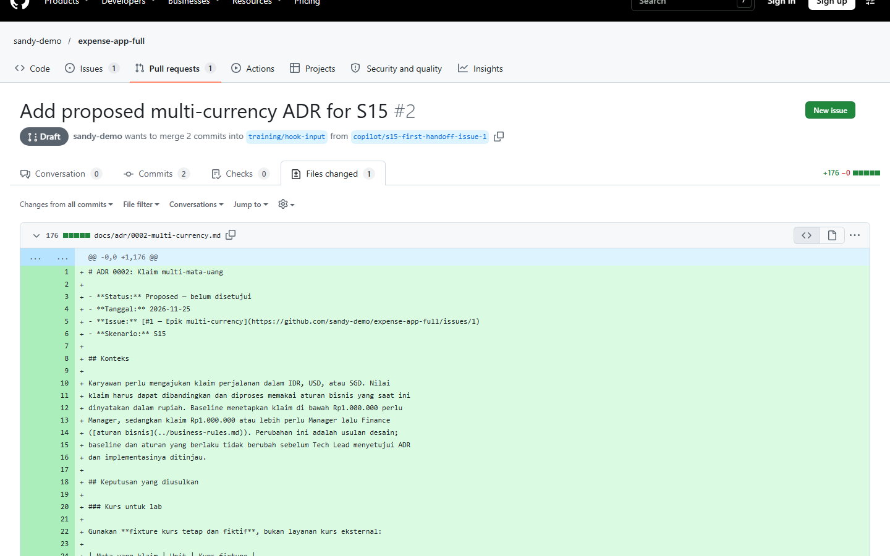
Perbesar S15-adr-proposed.pngPerbesar S15-adr-proposed-annotated.png
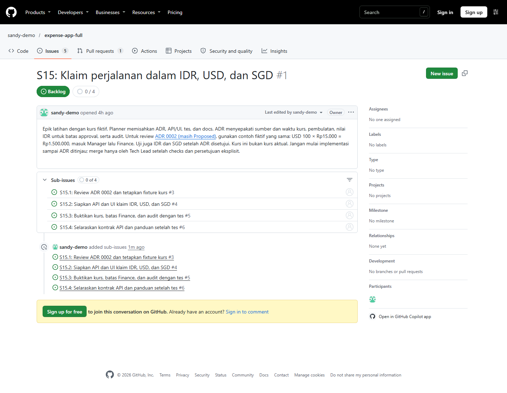
Perbesar S15-epic-backlog.png
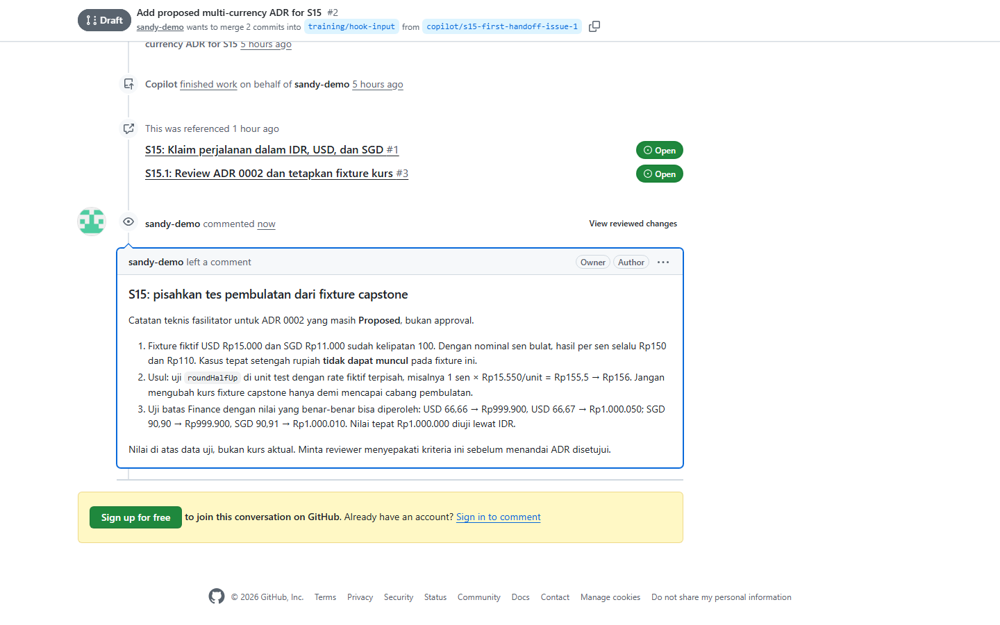
Perbesar S15-adr-review-rounding.png
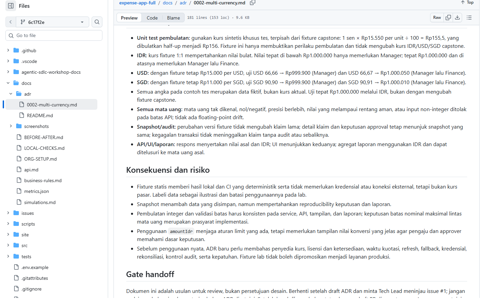
Perbesar S15-adr-rounding-revised.png7 layar yang belum direkam
S15-03-adr.pngS15-04-pr.pngS15-05-ci.pngS15-06-reviews.pngS15-07-merge.pngS15-08-docs.pngS15-after.png
Ulangi latihan
Berhenti dari terminal server dengan Ctrl+C; jalankan npm run demo:before lagi. Data demo kembali ke seed; tidak ada perubahan ke GitHub.
npm run reset
npm run demo:before